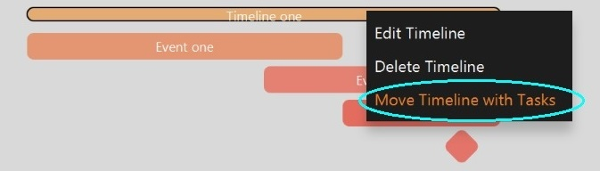

Moving Timeline
- Right-click on the timeline
- Select Move Timeline with Tasks
- Change the start date/ end date in the pop-up window
- Press Save to finish or Cancel/ESC/X button of the pop-up window to return
The timeline and its tasks will be displayed according to the new dates.

Back